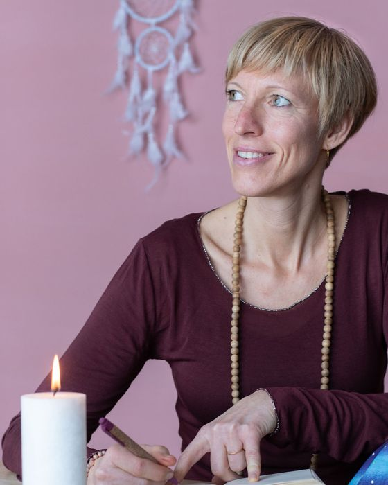

Wöchentlicher Forschungsraum
Deine Worte, deine Realität.
Hier schauen wir auf die Sätze, die du täglich sagst, zu anderen und vor allem zu dir selbst. Wir erforschen, welche Überzeugungen dahinter stecken. Denn deine Worte zeigen dir: wo du dich klein machst, dich rechtfertigst, über deine Grenzen gehst, wo du Verantwortung übernimmst, die gar nicht bei dir liegt.

Die Haltung
Ehrlich hinhören.
Im Forschungsraum hören wir auf das, was du wirklich sagst, und auf das, was darin sichtbar wird. Es geht nicht darum, alles schön oder positiv zu reden, und auch nicht darum, dich zu verbessern. Sondern zu erkennen, welche Überzeugungen, Reaktionen oder Muster in deiner Sprache sichtbar werden, die dir heute nicht mehr dienen und unbewusst deine Realität mitbestimmen. Genau das ist der Anfang von echter Wandlung.
So läuft ein Raum
Eine Stunde, in der es echt wird
Wir hören hin
Mit einfachen Techniken und Übungen schauen wir uns konkrete Worte oder Sätze aus dem Alltag an.
Wir schauen dahinter
Welche Überzeugung, welches Muster oder welcher Glaubenssatz steckt hinter deinen Worten? Welche Reaktionen entstehen dadurch in deinem Alltag? Wir forschen, gemeinsam, ohne Bewertung.
Etwas darf sich lösen
Du nimmst es mit in deinen Alltag, nicht als Aufgabe, sondern weil du dir über etwas bewusst geworden bist. Und genau da fängt Veränderung an. Du nimmst anders wahr, reagierst anders, und Schritt für Schritt entsteht deine neue Realität.
Worum es wirklich geht
Sprache ist der Spiegel deines Inneren
„95 Prozent von dem, was wir denken, läuft unterbewusst. Für Wandlung stehen die Worte an erster Stelle, weil sie sichtbar machen, welche Gedanken, Muster und Prägungen in uns wirken."
— Sibylle Laßmann
Im Forschungsraum geht es nicht darum, schöner zu sprechen oder zu formulieren.
Es geht darum, dich selbst klarer zu hören, in den Worten, die du jeden Tag benutzt.
Der Forschungsraum hilft dir,
- deine eigenen Reaktionsmuster schneller zu erkennen und zu wandeln
- klarer zu spüren, was wirklich deins ist
- bewusster Grenzen zu setzen
- weniger in Rechtfertigung zu rutschen
- Verantwortung dort zu lassen, wo sie hingehört
- freier und klarer zu kommunizieren und zu handeln
Was sich im Alltag ändert
Die Termine
Zwei feste Zeiten pro Woche
Such dir aus, was in dein Leben passt, Dienstag oder Donnerstag. Beides online, du brauchst nur einen ruhigen Platz und Zoom.
Dienstag
11:30 – 12:30
1 Stunde · online via Zoom
Donnerstag
18:30 – 19:30
1 Stunde · online via Zoom
Kostenfrei schnuppern
Komm einmal dazu und erlebe den Forschungsraum selbst und wie er wirkt.
Eine Stunde online, in einer kleinen Gruppe. Du brauchst kein Vorwissen und auch nichts vorzubereiten. Nur die Bereitschaft, wirklich da zu sein.
Such dir den Termin aus, der passt:
Den Beitrag besprechen wir in Ruhe, komm erst einmal kostenfrei zum Schnuppern.
Wichtige Info: Der Forschungsraum ist ein geschützter Arbeitsraum. Bitte sei mit eingeschalteter Kamera dabei und sorge dafür, dass du in der Stunde ungestört bist.